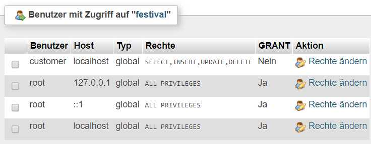

Inhaltsverzeichnis
PHP Einleitung (zum Inhaltsverzeichnis)
PHP ist eine Programmiersprache, die interpretiert wird. Der Code liegt ausschliesslich auf dem Server und gelangt nie zum Client. Er wird dort ausgeführt und in der Regel wird mittels dem Befehl 'echo' HTML-Code kreïert, welcher an der Stelle des Skriptes zum Client gesandt wird.
Somit ist das Verwenden eigentlich und im Gegensatz von JavaScript nur davon abhängig, was der Server für eine Version von PHP zur Verfügung stellt. Clientseitig kann aber alles ignoriert werden - ausser natürlich des gebenen Codes, welcher widerum auf dem Client vom Browser bzw. dessen Version abhängig ist.
PHP kann viel (Logik, Datenbankzugriffe) - aber als Interface dient HTML (welches dann widerum mit CSS formatiert werden kann).
PHP kann (soll) auch objektorientiert angewandt werden.
Einfaches Beispiel (zum Inhaltsverzeichnis)
Damit es funktioniert, muss die Datei statt der Endung '.html' die Endung '.php' haben!
|
Für Klassen oder andere Definitionen, welche ausgelagert werden und zum Code hinzugeholt werden (dazu später mehr), kann das 'HTML'-Geschmäus weggelassen werden. Nie aber '<?php' und abschliessend '?>'.
Externer PHP-Code (zum Inhaltsverzeichnis)
Wie oben angetönt, kann PHP in mehreren Files organisiert sein (wie auch immer). Es gibt zwei Befehle, um diese Files (wie immer relativ zum Root der Web-Site) zu referenzieren.
In dem Fall muss nicht der ganze HTML-Overhead mitcodiert werden. Es genügt '<?php' und abschliessend '?>'.
- include 'pfad/file';
Das File wird geladen, falls es vorhanden ist.
- include_once pfad/file';
Das File wird geladen - aber nur einmal, sofern die anderen Referenzen ebenfalls mit 'include_once' angefordert werden
- require 'pfad/file';
Das File wird geladen, es MUSS vorhanden sein.
- require_once pfad/file';
Das File wird geladen - aber nur einmal, sofern die anderen Referenzen ebenfalls mit 'require_once' angefordert werden
Die Files müssen jeweils vor der ersten Referenz aus dem Code geladen worden sein (PHP wird ja von oben nach unten interpretiert und nicht kompiliert! - Der Vollständigkeit halber: Funktionen im gleichen File müssen nicht unbedingt vor dem ersten Aufruf definiert werden. Wie man damit umgeht, ist wohl eine persönliche Stilfrage).
Tipps zum Testen/Entwickeln (zum Inhaltsverzeichnis)
Entwickeln und Testen kann zur pain in the ass werden - ich rede aus Erfahrung. Das beginnt beim Finden des relevanten php.ini und hoert auf bei den komplexen Client/Server-Funktionen, welches (aktueller Wissensstand) nicht vernünftig 'debugged' werden kann. Deshalb hier die wichtigsten Hinweise:
php.ini: display_errors
Statt lange Zeit damit zu verschwenden, das richtige php.ini-File zu finden (ich habe immernoch keine
sichere Auskunft, wo bei MAMP das richtige liegt), koennen Parameter auch manuell mit der Funktion
ini_set(parametername) gesetzt werden. Der wichtigste: 'display_errors' - er gibt
in der Browserkonsole PHP-Fehler aus.
Wichtigste Parameter (im Zweifelsfall 'googeln' oder im php.ini gucken):
| display_errors | Anzeigen PHP-Fehler in Browser (Konsole). Werte: 'ON', 'Off' |
| error_reporting | Welche Fehler anzeigen? Empfehlung: 'E_ALL' |
| SMTP | Mail-Server |
| smtp_port | Port Mail-Server: Da gibt es verschiedene, je nach Verschlüsselung. In MAMP ist, glaube ich, nur 25 supported (keine Verschlüsselung). Muss zu SMTP passen! |
| sendmail_from | Mailadresse des Absenders. |
Ausgabemöglichkeiten
Ebenfalls kompliziert. Mit echo ist die prinzipielle Ausgabe ins Resultatfile, welches dann
an den Client gesandt wird. Normalerweise wird HTML-Code ausgegeben. Aber es kann ggf. als auch fuer anderes
missbraucht werden.
Weitere Möglichkeiten:
var_dump und var_export: Damit koennen Inhalte von Variablen ausgegeben werden
(normalerweise in der Entwicklerkonsole des Browsers ('google' für entsprechenden Browser;
Stichworte: 'Developper Tools', 'Entwicklertools' ... oder so ...)
Ein Spezialfall bei PDO (siehe auch weiter unten - hier nur der Vollständigkeit erwähnt):
debugDumpParams().
Operatoren (zum Inhaltsverzeichnis)
Rechenoperatoren
| + / - / * / / / () | Die üblichen Verdächtigen |
| ++ / -- | Autoinkrement / Autodekrement Vor der Variable: Gerechnet wird vor Ausführung Nach der Variable: Gerechnet wird nach der Ausführung |
| += / -= | Abgekürzte Berrechnung der Variable: i+=12; |
| . | Verbinden von zwei Strings ACHTUNG: In JavaScript ist das '+'!! |
| .= | Verlängern eines Strings: $text.="noch mehr Text";ACHTUNG: In JavaScript ist das '+'!! |
| % | Modulo: Ermitteln ganzzahliger Rest einer Division. |
Logik-Operatoren
| > / < / >= / <= / () | Die üblichen Verdächtigen |
| == | ist gleich |
| != | ist ungleich |
| ! | nicht |
| && | UND-Verknüpfung |
| || | ODER-Verknüpfung |
Sprachkonstrukte (zum Inhaltsverzeichnis)
Aufbau eines Kommandos:
- Anweisungen werden mit einem ';' (Semikolon) abgeschlossen.
- Ausser bei Konstrukten mit '{' und '}' (Loops, ifs, Funktionen ...)
Beispiele:
$variable = wert;
if ($variable == null) {
$variable = wert;
}
| Konstrukt | Erklärung | ||||||||||||||||
|---|---|---|---|---|---|---|---|---|---|---|---|---|---|---|---|---|---|
| break [n]; | Unterbricht eine Schlaufe komplett n: 'breakt' n Verschachtelungen von Loops, beginnend vom innersten Loop (n=1) bis zum übergeordneten Loop (n = 2) und so weiter. Wird n weggelassen, wird nur der innerste Loop unterbrochen. | ||||||||||||||||
| continue [n]; | Unterbricht eine Schlaufe und springt zum Schlaufenbeginn. n: 'continuet' n Verschachtelungen von Loops, beginnend vom innersten Loop (n=1) bis zum übergeordneten Loop (n = 2) und so weiter. Wird n weggelassen, wird nur der innerste Loop fortgesetzt. | ||||||||||||||||
| echo | Ausgabe ins File, welches gesandt wird. Die Ausgabe erfolgt genau an der Position, anstelle und wo das PHP-Skript ist. Normalerweise wird html-Code erzeugt. | ||||||||||||||||
| exit(status) | bricht php sofort ab Status: Wenn vom Typ String, wird er ausgegeben, wenn numerisch, dann von 0 (ok) bis 254 - der Zweck dazu hat sich mir nicht erschlossen ... | ||||||||||||||||
| for | Schlaufe: for (initial; bedingung; 'nachführen') {} 'initial' entspricht der Initialisierung; Beispiel: $i = 0; 'bedingung' ist das Abbruchkriterium, wenn Wahr, dann wird die Schleife fortgesetzt! Beispiel: $i < 10; 'nachführen': Gelegenheit, den Zähler nachzuführen; Beispiel: $i++; Beispiel: | ||||||||||||||||
| foreach | Abarbeiten eines Arrays Beispiel einfacher Array: Beispiel indizierter Array | ||||||||||||||||
| goto | Springen an eine Marke, welche mit abschliessendem ':' im Geltungsbereich enthalten sein muss. Es kann nicht aus Funktionen, in Funktionen oder Schleifen gesprungen werden - aus Schleifen heraus hingegen schon. Der Programmstruktur zu Liebe sparsam verwenden ... | ||||||||||||||||
| if | Bedingung Mögliche Operatoren
Beispiel (umfangreich) | ||||||||||||||||
| include include_once | Kopiert eine angegebene Datai an die Stelle und führt sie aus. Der Name ist als String (in Hochkomma/Gänsefüsschen) zu übergeben. Ausgangpfad ist der Basispfad der WebSite. Wird die Datei nicht gefunden erfolgt eine Warunung - im Gegensatz zu 'require', welches einen Fatal-Error erzeugt. include_once: PHP prüft, ob die Datei nicht bereits included ist. Sollte sie sein, wird der Befehl übergangen. Beispiel: | ||||||||||||||||
| require require_once | Kopiert eine angegebene Datai an die Stelle und führt sie aus. Der Name ist als String (in Hochkomma/Gänsefüsschen) zu übergeben. Ausgangpfad ist der Basispfad der WebSite. Wird die Datei nicht gefunden erfolgt ein Fatal-Error - im Gegensatz zu 'include', welches eine Warunung erzeugt. require_once: PHP prüft, ob die Datei nicht bereits included ist. Sollte sie sein, wird der Befehl übergangen. Beispiel: | ||||||||||||||||
| return | Für Funktionen: Beendet diese und gibt einen Wert zurück. | ||||||||||||||||
| switch | Mehrfachverzweigung - am besten erklärt mit Beispiel: 'break;' veranlasst PHP, den 'switch' zu verlassen - ansonsten würde weiter geprüft, was vielleicht manchmal sinnvoll sein könnte(?). | ||||||||||||||||
| try / catch | Versuche etwas in 'try'... falls Fehler wird 'catch' ausgeführt. Wird wohl am häufigsten mit DB-Operationen verwendet. | ||||||||||||||||
| while | Tue etwas bis ... widerum ein Beispiel Kopfgesteuert: Fussgesteuert: |
Variablen (zum Inhaltsverzeichnis)
Namenskonventionen
- Beginnend mit ¨$', gefolgt von Buchstaben oder '_'
- Ausser '_' keine Sonderzeichen
- Müssen nicht deklariert werden
- Auf reservierte Wörter achten
Typen (zum Inhaltsverzeichnis)
Diese werden automatisch definiert - da Variablen nicht deklariert werden müssen.
| boolean | True oder False |
| integer | Ganzzahl |
| double | Gleitkommazahl |
| string | Zeichenkette |
| array | Array oder Tabelle (n-Dimensional) |
| object | Objekt |
Besonderheiten (zum Inhaltsverzeichnis)
null
Entspricht 'nichts', eine Variable kann so 'neutralisiert' werden oder es ist auch nützlich, einen definiert undefinierten Wert aus einer Funktion zurückzugeben.
Strings: Hochkomma vs. Gänsefüsschen
Grundsätzlich werden in PHP Strings in Hochkommas bzw. Gänsefüsschen dargestellt. Im Zusammenhang mit 'echo' ausgebenem HTML-Code bekommt dieses Feature plötzlich eine Dimension:
echo "<a
href='linkadresse'>linktext<a>";
So kann ein String im String dargestellt werden.
Spezialität ' / "
Der Unterschied in der Handhabung von ' und " ist am besten anhand von Beispielen zu veranschaulichen:
$variable = "ich";
echo "Inhalt von Variable $variable ist: "
. $variable;
Ausgabe: Inhalt von Variable ich ist: ich
echo 'Inhalt von Variable $variable ist: '
. $variable;
Ausgabe: Inhalt von Variable $variable ist: ich
Ist eine Variable innerhalb von ' im String enthalten, wird der Name ausgegeben. Innerhalb von " hingegen wird die Variable aufgeschlüsselt.
Datum (zum Inhaltsverzeichnis)
PHP kennt kein Feldformat Datum, was die Sache etwas schwer macht ... einige hilfreiche Funktionen:
checkdate
checkdate($day, $month, $year);Prüft ein Datum
date
date($format [, $time]);Gibt ein Datum zurück, abhängig vom Format-String. Wird die Zeit nicht mitgegeben, wird der Unix-Timestamp angenommen.
Die nachfolgenden Formatierungszeichen können mit '/', '.', ':' (getestet) oder was auch immer (ungetestet) ergänzt werden.
Formatierungszeichen Datum
d Tag des Monates, zweistellig, ggf. mit führendem 0 j Tag des Monates ohne führendes 0 D dreistellige Abkürzung des Wochentags l (kleines 'L') Wochentag ausgeschrieben N Wochentag numerisch: 1 = Montag bis 7 = Sonntag Z Tag des Jahres m Monat, zweistellig, ggf. mit führendem 0 n Monat als Zahl ohne führendes 0 M dreistellige Abkürzung des Monates F Monat ausgeschrieben t Anzahl Tage des Monates (28 (,29), 30, 31) W Wochennummer Jahres (1. Woche ist die Woche des ersten Montages) y Jahr 2-stellig Y Jahr 4-stellig L Prüft, ob das Jahr ein Schaltjahr ist. Formatierungszeichen Zeit
g Stunde 1 - 12 G Stunde 1 - 24 a am/pm, klein geschrieben A AM/PM, gross geschrieben i Minuten, 2-stellig, ggf. mit Vornull s Sekundenen, 2-stellig, ggf. mit Vornull strtotime
strtotime($date);Versucht ein 'plausibles' Datum zu einem Unix-Timestamp umzuwandeln.
'Superglobale' Variablen< (zum Inhaltsverzeichnis)
PHP stellt diverse Variablen in Form von Arrays zur Verfügung. Einige werden hier erklärt (der Verweis findet sich in der Erklärung), viele aber nicht. Für diese wird auf Superglobale Variablen http://www.w3schools.com/php/php_superglobals.asp verwiesen.
| $GLOBALS | Zugriff auf alle globalen Variabeln |
| $_SERVER | Zugriff auf Server-Infos |
| $_REQUEST | Zugriff auf Request-Infos |
| $_POST | Zugriff auf POST Daten nach einem Formular submit (siehe auch Kommunikation in PHP (GET/POST) ) |
| $_GET | Zugriff auf Request Parameter in der URL (siehe auch Kommunikation in PHP (GET/POST) ) |
| $_FILES | Zugriff auf Files, die mit einem Formular hochgeladen wurden|
| $_ENV | Zugriff auf Variablen der Laufzeitumgebung |
| $_COOKIE | Zugriff auf Cookies des aktuellen Benutzers (siehe auch Session und Cookies) |
| $_SESSION | Zugriff auf Session des aktuellen Benutzers (siehe auch Session und Cookies) |
Konstanten (zum Inhaltsverzeichnis)
- Wie Variablen - können aber nicht geändert werden.
- Sind global gültig - auch in Funktionen.
- Namenskonventionen
- Beginnen NICHT mit '$'
- Beginnen mit Buchstaben oder '_'
- Warum nicht in Grossbuchstaben ...
Definition:
define("VERSION", "1.0.1");Referenz:
echo "Version " . VERSION;
Arrays (zum Inhaltsverzeichnis)
Arrays oder Tabellen (mehrdimensional organisierte Daten) sind ein recht mächtiges Teil in PHP. Es wird unter zwei Typen unterschieden:
- indizierter, einfacher Array: Mit einfachem, numerischem Index
- assozierter Array: Ein Array mit 'Key', also alphanumerischem Index
Arrays können sämtliche Datentypen repräsentieren - auf gleicher Hierarchieebene sogar verschiedenen Datentyps (proof of concept während dieser Dokumentation allerdings ausstehend).
Indizierter Array (zum Inhaltsverzeichnis)
Dies ist ein einfacher Array bzw. Tabelle, welcher mit Zahl indiziert wird: Erstes Entry hat 0, das nächste 1 und so weiter bis zum letzten Eintrag.
$variable = array("ich", "Du", "er", "wir");
echo "<p>Wert des ersten Eintrages: $variable[1]</p>";
oder
foreach($variable as $inhalt) {
echo "<p>Inhalt: $variable[1]</p>";
}
oder
for($i=0;$i < count($variable);$i++) {
echo "<p>Inhalt $i: " . $variable[$i] . "</p>";
}
Assozierter Array (zum Inhaltsverzeichnis)
Das ist ein Array, der mit leserlichen Werten indiziert ist.
$variable = array("christian"=>"ich"
, "sofia"=>"Du"
, "hausfreund"=>"er"
, "familie"=>"wir");
echo "<p>Wert des Eintrages 'ich': $variable['ich']</p>";
oder
foreach($variable as $name=>$inhalt) {
echo "<p>Inhalt &name: $inhalt</p>";
}
Ein assozierter Array kann NICHT indiziert angesprochen werden!
Array sortieren (zum Inhaltsverzeichnis)
indizierte Arrays
sort($array) aufsteigend rsort($array) absteigend assozierte Arrays
asort($array) aufsteigend nach Wert ksort($array) aufsteigend nach Key arsort($array) absteigend nach Wert aksort($array) absteigend nach Key Sophisticated Sort (usort)
Sortiert einen Array mit Hilfe einer Sortierfunktion. Die Funktion gibt zurück:
Resultat identisch: 0 Die Elemente sind gleich Resultat negativ Das erste Element ist kleiner als das zweite Resultat positiv Das erste Element ist grösser als das zweite Beispiel:
// Ausgangslage: Array mit Arrays (Text und Timestamp) $liste = array(array("item1", strtotime('02-03-2017')) , array("item2", strtotime('27-2-2017')) , array("item3", strtotime('23-2-2017'))); // Ausgabe vor Sortierung foreach($liste as $element) { echo "<p>1 $element[0]<br> 2 " . date('d-m-Y', $element[1]) . "</p>"; } // Sortierfunktion // Magic: Als Parameter werden zwei Elemente von $Liste übergeben function vergleiche($a, $b) { // Wir vergleichen das 2. Element der beiden übergebenen Arrays: das Datum if ($a[1] == $b[1]) return 0; // gleich elseif ($a[1] < $b[1]) return - 1; // erstes grösser als zweites else return 1; // zweites grösser als erstes } // Sortierfunktion Variante 2: Differenz rechnen function vergleiche2($a, $b) { return $a[1] - $b[1]; // Differenz positiv, negativ oder 0 als Resultat } // Sortierung usort($liste, "vergleiche"); // Ausgabe nach Sortierung foreach($liste as $element) { echo "<p>1 $element[0]<br> 2 " . date('d-m-Y', $element[1]) . "</p>"; }Ausgabe vor Sortierung:
1 item1 2 02-03-2017 1 item2 2 27-02-2017 1 item3 2 23-02-2017Ausgabe nach Sortierung:
1 item3 2 23-02-2017 1 item2 2 27-02-2017 1 item1 2 02-03-2017
Kommunikation in PHP (GET/POST) (zum Inhaltsverzeichnis)
Es wird mit zwei Methoden unterschieden: GET und POST. GET ist sichtbar,
die Kommunikation erfolgt über die URL: www.domain.ch?para1=1¶2=2.
POST erfolgt - sagen wir einmal - unsichtbarer versteckter (ich weiss
im Detail nicht wie): Es werden alle Parameter aus einem Formular mit
method="POST" an den Server geschickt. In PHP können die beiden aus
folgenden Arrays ausgelesen werden:
- $_GET
- $_POST
Im folgenden zwei Beispiele der Handhabung.
GET (zum Inhaltsverzeichnis)
Aufruf:
<a href="php.php?param1=" . $wert1 . "¶m2=" . $wert2 . "&">link</a>
- Eingeleitet mit '?'
- Name des Parameters gefolgt von '='
- Wert des Parameters gefolgt von '&'
- Weitere Parameter: Wiederholen der letzten beiden Punkte.
Auswertung in 'php.php':
if (isset($_GET) && !empty($_GET) {
if(array_key_exists($_GET, "param1") {
$wert1 = $_GET['param1'];
}
if(array_key_exists($_GET, 'param2') {
$wert2 = $_GET["param2"];
}
}
POST (zum Inhaltsverzeichnis)
Aufruf:
<!- Formular -->
<form method='POST' action='php.php'>
<fieldset>
<p>
<label for='f_title'>Titel</label>
<input id='f_title' name='title' type='text' maxlength='40' tabindex='1'"
. "value='$title'>
</p>
<p>
<label for='f_dueDate'>zu erledigen bis</label>
<input id='f_dueDate' name='dueDate' type='date' maxlength='200' tabindex='3'
value='$dueDate'>
</p>
<p>
<input id='f_write' type='submit' name='write' value='$mode'
</p>
</fieldset>
</form>
Auswertung in 'php.php':
if (isset($_POST) && !empty($_POST) {
if(array_key_exists($_POST, "title") {
$wert1 = $_POST['title'];
}
if(array_key_exists($_POST, 'dueDate') {
$wert2 = $_POST["dueDate"];
}
}
Session und Cookies (zum Inhaltsverzeichnis)
Es besteht die Möglichkeit (sofern der Benutzer des Browsers sog. Cookies erlaubt, Daten über die Dauer einer Site/Request zu speichern. Widerum gibt es zwei Möglichkeiten:
Cookie
Diese werden lokal beim Benutzer/Browser gespeichert
Session
Beim Benutzer wird lediglich die Session-ID gespeichert, auf dem Server der Rest.
Cookies (zum Inhaltsverzeichnis)
Das Cookie sollte 4 * 1024 Bytes (4 KB) nicht überschreiten, um mit allen Browsern kompatibel zu bleiben. Das Cookie wird mittels einer Funktion gesetzt - und sind dann aus einem Array abrufbar. Die Zeitdauer der Gültigkeit kann vom Server "gewünscht" werden - letztendlich entscheidet der Browser (oder die durch den User getätigten Einstellungen) darüber.
setcookie("nameCookie", "wertCookie", gueltigkeitsdauernameCookie Idenitifikation des Cookies im Array. wertCookie Wert des Cookies. nameCookie Dauer der Gültigkeit (als absoluter UNIX-Timestamp). Ist der Wert 0, wird das Cookie ungültig, wenn die Session geschlossen worden ist. Anmerkungen zu
setcookie():- Es muss im HTML-Header erfolgen - bevor irgendeine Ausgabe erfolgt!
- Obige Parameterbeschrieb ist nicht vollständig (siehe für mehr Infos im www.
Anmerkung zum Unix-Timestamp:
Es handelt sich um die Anzahl Sekunden seit 1. Januar 1970, 00:00. Will man also zum Beispiel einen Tag dazuzählen muss zum Timestamp 3600 *24 addiert werden.
Auslesen Cookies
Die Cookies sind im Array '$_COOKIE'; (oder auch '$HTTP_COOKIE_VARS' gespeichert und können wie ein Array behandelt werden:
$wert = $_COOKIE["nameCookie"
Session (zum Inhaltsverzeichnis)
Im Gegensatz zu Cookies werden die Daten beim Verfahren 'Session' bis auf die Identifikation der Session auf dem Server gespeichert - damit ist die Grössenbeschränkung von 4 KB nur bedingt relevant.
Die Session muss gestartet werden und kann auch zwischenzeitlich gestoppt bzw. zurückgesetzt werden. Die Id kann ermittelt oder gesetzt werden - was aber im Grunde genommen nicht nötig ist.
Bevor auf $_SESSION zugegriffen werden kann, muss die Session gestartet werden!
Re-/Starten Session
session_start();Es muss im HTML-Header erfolgen - bevor irgendeine Ausgabe erfolgt!
Setzen/Lesen Session Parameter
$_SESSION['neuerWert'] = 'wert'$wert = $_SESSION['neuerWert'];Setzen/Lesen Session-ID
session_id($id);$id = session_id();Zerstören Session
session_destroy();- Interessante Variablen
session_cache_expire Zeigt, wie lange eine Session gueltig ist (Default in Minuten: 180) Sie kann auch veraendert werden. session_save_path Pfad auf dem Server, wo die $_SESSION-Daten stecken. session_id ID genau der Session (ist nicht gesetzt, wenn keine Session). session_cache_limiter Hab ich nicht ganz begriffen - hierd der Originaltext
specifies the cache control method used for session pages. It may be one of the following values:
- nocache (Default)
- private
- private_no_expire
- public
See also the session_cache_limiter() documentation for information about what these values mean.
Funktion (zum Inhaltsverzeichnis)
Funktionen sind wieder verwendbare Codesequenzen, welche in eigenen, zu referenzierenden php-Files als
Libraries deklariert werden können (referenzieren mit include, require
(once macht bei Verschachtelungen plötzlich Sinn).
In der Regel sollte die Funktion vor Gebrauch deklariert werden (ein Test hat allerdings ergeben, dass es (neuerdings?) auch umgekehrt funktioniert.
Deklaration (zum Inhaltsverzeichnis)
Funktion mit Namen 'summe' mit Parametern 'wert1' und 'wert2' wobei der zweite Wert, wird keiner übergeben, den Wert 1 annimmt. Die Funktion gibt als Resultat die Summe von 'wert1' und 'wert2' zurück.
In der Funktion verwendete Variablen sind nur innerhalb der Funktion gültig. Die übergebenen Variablen sind 'by value' - das heisst: Werden die Werte in der Funktion geändert, bleiben die Original-Werte ausserhalb der Funktion unverändert.
function summe($wert1, $wert2=1) {
$summe = $wert1 + $wert2
// beliebiges oder nötiges, weiteres php-coding
return $summe; // Rückgabe: Resultat
}
Man könnte die Funktion natürlich noch beliebig ausschmücken mit z.Bsp. Prüfung der Parameter etc. Das Beispiel soll ja nur das Prinzip zeigen.
Anwendung / Aufruf (zum Inhaltsverzeichnis)
...
$wert1 = 1;
$wert2 = 1;
$summe = summe($wert1, $wert2);
echo "<p>Summe von $wert1 und $wert2 ist: $summe</p>"
// alternative (direkter Aufruf)
echo "<p>Summe von $wert1 und $wert2 ist: " . summe($wert1, $wert2) . "</p>"
}
Interessante Funktionen (zum Inhaltsverzeichnis)
| array_key_exists($array, "key") | Ob mit "key" ein Wert im Array vorhanden ist. |
| checkdate($day, $month, $year) | Prüft, ob ein Datum gültig ist. |
| count($Array) | Gibt die Anzahl Elemente eines Arrays zurück. |
| empty | Prüft, ob eine Variable leer ist. Eine Variable ist leer, wenn sie nicht existiert oder wenn ihr Wert gleich NULL ist. Siehe auch |
| function_exists($nameFunction)) | Gibt Wahr zurück, wenn die Funktion existiert (allerdings nicht ausprobiert!). |
| gettype($variable) | Gibt den Typen der Variable als String zurück |
| is_array($variable) | Gibt Wahr zurück, wenn die Variable ein Array ist. |
| is_null($variable) | Gibt Wahr zurück, wenn die Variable null bzw. nichts ist Siehe auch |
| is_numeric($variable) | Gibt Wahr zurück, wenn die Variable numerisch ist. |
| is_object($variable) | Gibt Wahr zurück, wenn die Variable ein Objekt ist. |
| is_string($variable) | Gibt Wahr zurück, wenn die Variable ein String ist. |
| isset($variable) | Prüft, ob eine Variable existiert und nicht NULL ist. Siehe auch |
| method_exists($nameMethode) | Gibt Wahr zurück, wenn die Methode (Funktion einer Klasse/Objekt) existiert (allerdings nicht ausprobiert!). |
| password_hash($pwd, $algo) | Passwort verschlüsseln - ziemlich sichere Methode. Es wird empfohlen, als $algo die Konstante PASSWORD_DEFAULT mitzugeben. Dies stellt sicher dass Algorithmusverbesserungen bei neuen Passwoertern mit einfliessen. Mit |
| password_verify($pwd, $pwd_hashed) | Passwort prüfen; siehe
|
| print_r($variable) | Kann beim Debuggen helfen: Ausgabe von Variablen (Arrays werden leidlich übersichtlich ausgegeben). |
| str_replace("needle","new needle","heyStack") | Replace ... selbstsprechend, oder? |
| str_word_count($variable); | Gibt die Anzahl Wörter eines Strings zurück. |
| strlen($variable); | Gibt die Länge des Strings zurück. |
| strpos($heystack, $needle); | Gibt die Position von $needle in $haystack zurück. |
| strtotime($date); | Versucht ein 'plausibles' Datum zu einem Unix-Timestamp umzuwandeln. |
| substr($heystack, $start, [$length]); | Gibt einen Teil des Quellstrings 'Heystack' zurück ... sollte selbstsprechend sein. |
| unset($variable); | 'Loeschen' einer Variable - sie kann dann mit Tipp: Verwenden um Array-Elemente zu 'entfernen'. |
| var_dump($variable); | "Dumpt" eine Variable/Objekt. |
| var_export($variable); | "Dumpt" eine Variable/Objekt, etwas schoener als
|
Klassen und Objekte (zum Inhaltsverzeichnis)
PHP kennt auch Klassen und damit natürlich auch Objekte (während Klassen die Deklaration darstellen, sind die Objekte Instanzen der Klasse - aber den objektorientierten Ansatz hier erklären zu wollen, sprengt den Rahmen dieser Lern-Notizen).
Mit den Klassendeklarationen verhält es sich ähnlich wie mit den Funktionen: Sie müssen (oder
zumindest sollten) vor der Verwendung deklariet werden. Dies kann auch in externen php-Files
geschehen, welche dann mit include oder require referenziert
werden können.
Klassen Deklaration
class klassenName {
// Eigenschaften (oder Klassenvariablen)
private $variable;
// Spezielle Funktion: Constructor
public function __construct($param1='defaultWert' [, $param2 ...]) {
// Coding, zum Beispiel Initialisierungen
}
/* Getter / Setter (Lesen / Setzen von Eigenschaften/Klassenvariablen
(sind eigentlich normale Methoden/Funktionen und werden nur am Namen als
Getter/Setter erkannt */
public get_variable() {
return $this->variable;
}
public set_variable($param='defaultWert') {
$this->variable = $param;
// ggf. weiteres, davon abhängiges Coding
}
/* methoden (Funktionen)
wir arbeiten mit dem Objekt ... */
public wirVeraendernDieEigenschaften($param1='defaultWert' [, $param2 ...]) {
// Coding
}
}
Besonderes
- Werden Eigenschaften oder Methoden vom Objekt selber, also innerhalb des Objektes
angesprochen, ist mit
$this->darauf zu verweisen.
Speziell: Die Variablen werden dann ohne '$' angesprochen! - Die Spezielle Methode '__constructor()' wird, wenn die Klasse instanziert wird, automatisch aufgerufen. Bei der Instanzierung können die definierten Parameter mitgegeben werden (siehe dazu auch im Folgenden).
- Setter und Getter Konstrukte in der objektorientierten Programme, womit die an und
für sich privaten Eigenschaften angesprochen werden können. Es kann darin auch
'Intelligenz' in Form von php-Coding programmiert werden.
In php scheinen es aber normale Methoden (oder Funktionen) zu sein, die speziell benennt werden, dass man sie als solches erkennt.
Objekte (instanzierte Klassen) (zum Inhaltsverzeichnis)
Damit die Klassen auch verwendet werden können, müssen sie instanziert werden - mit der Deklaration alleine kann man nicht arbeiten. Eine Klasse ist eine Art Modell und das Objekt das abgeleitete, brauchbare Teil davon. Die Klasse kann mehrfach instanziert werden - mit verschiedenen Objektnamen oder in einem Array mit Objekten.
Instanzieren
$objektName = new klassenName($param);
Die Klasse wird instanziert und der '$param' dem '__constructor()' übergeben, welcher gleich anschliessend automatisch ausgeführt wird. So können zum Beispiel Eigenschaften initalisiert werden oder andere initiale Tätigkeiten ausgeführt werden.
Referenzieren Methoden
/* Verwenden Methode mit Parameter
(hier einen 'Setter') */
$objektName->set_variable($param);
/* Verwenden einer Methode mit Rückgabewerten
(hier einen 'Getter') */
echo "<p>" . $objektName->get_variable() . "</p>";
Statische Eigenschaften / Klassenvariablen (zum Inhaltsverzeichnis)
Statische Eigenschaften (oder Klassenvariablen) existieren genau einmal pro Klasse - auch wenn die Klasse x-mal instanziert wird. Das hat Vorteile, wenn zum Beispiel die Eigenschaft für alle Objekte sowieso gleich ist. Im weiteren Sinn kann sie auch als Konstante verwendet werden.
Deklaration / Verwendung
Die Deklaration hat natürlich innerhalb einer Klasse zu erfolgen!
class Klassenname {
private static $eigenschaft = "dick";
// ... weitere Eigenschaften / Methoden
public function get_eigenschaft() {
return Klassenname::$eigenschaft;
}
}
Man beachte:
- Erstes wird die Klasse mit Namen und nicht mit $this angesprochen.
- Zweitens nicht mit einem '->', sondern mit '::'.
- Dafür steht vor dem Namen der statischen Variable ein '$'.
Statische Methoden (zum Inhaltsverzeichnis)
Das selbe kann man mit Methoden machen - es existiert eine über alle Objekte dieser Klasse. Ein dafür sinnvolles Beispiel fällt mir grad nicht ein - aber im Zusammenhang mit 'MySql' werden wir eines sehen!
Deklaration
class Klassenname {
// ... Eigenschaften / Methoden
public static function echoHallo() {
echo "<p>Hallo</p>";
}
// ... weitere Eigenschaften / Methoden
}
Verwendung
Die Klasse muss nicht instanziert werden - die statische Methode kann einfach gebraucht werden:
Klassenname::echoHallo();Man beachte:
- Wir sprechen keine Instanz der Klasse, sondern die Klasse selber an.
- Widerum wird anstelle des '->' '::' verwendet.
PHP und SQL-DBs (zum Inhaltsverzeichnis)
Im Web ist vieles kostenos bzw. Open Source. Man kann - abgesehen von der Hardware und dem nötigen Internetanschluss einen Server kostenlos aufsetzen. Eine weitere kostenlose und darum populäre Software ist die Datenbank-Software 'MySql'. Hier wollen wir eine Art des Zugriffes mit PHP betrachten - die letzte Art; wer arbeitet schon mit uralt-php?!?
Wir konzentrieren uns auf die objektorientierte Methode 'PDO' (PHP Data Objects), welche ab php Version 5.1 unterstützt wird. PDO ermöglicht Zugriff auf verschiedene DB-Systeme - wir betrachten hier aber nur einmal 'MySql'.
http://php.net/manual/de/class.pdo.php
PDO instanzieren / Verbindung aufbauen (zum Inhaltsverzeichnis)
Zu den folgenden Beispielen ist anzumerken, dass statt der hier verwendeten Methode
query() vorzugsweise mit den Methoden prepare() und
execute gearbeitet werden soll (siehe
Prepare() / Execute()).
klassisch
Dies wird am besten mittels einem Stückchen Code verbeispielhaftet, welcher gleich noch Daten mittels eines SQL ausliest:
Diese Methode wird nicht unbedingt empfohlen - besser die im folgenden beschriebene statische Methode anwenden!
<?php
$servername="localhost";
$db_name="todo_app";
$username="username";
$password="passwort";
try {
// wir versuchen zu verbinden
$conn = new PDO("mysql:host=$servername;dbname=$db_name;charset=utf8", $username, $password);
// set the PDO error mode to exception
$conn->setAttribute(PDO::ATTR_ERRMODE, PDO::ERRMODE_EXCEPTION);
// lesen (SQL-Statement)
$result = $conn->query("SELECT * FROM task LIMIT 100"); // HIER: LIMIT 100
$all = $result->fetchAll(); // gibt einen Array mit allen Records
foreach($all as $record) {
// alle records (indizierter Array)
foreach($record as $feldname => $wert) {
// alle Felder/Inhalte des Records (assozierter Array)
echo "<p>$feldname: $wert</p>";
}
}
}
catch (PDOException $e) {
// Fehler
echo "<p>Connection failed: " . $e->getMessage() . "</p>"; {
}
?>
Mit statischer Methode
Da die EINE DB möglicherweise vielerorts gebraucht wird, kann diese statisch definiert und verwendet werden (siehe auch Statische Methoden).
Diese Klasse muss (einmal, am besten in einem separaten php-File zwecks späterer, weiterer Verwendung) erstellt werden:
<?php
/**
* Created by PhpStorm.
* User: chwaelti
* Date: 09.02.2017
* Time: 19:11
* Klasse mit statischer Variable für Connection
* und statischer Funktion für die Datenbank anzuschnallen
* so, dass die Klasse nicht instanziert werden muss und
* die DB-Connection über die ganze 'Site' nur einmal ge-
* macht werden muss.
*/
class db {
private static $CONN = null; // statisch: Bleibt erhalten über alle Instanzen
// statische Funktion: Bleibt erhalten über alle Instanzen
public static function getDB() {
if (db::$CONN == null) {
$servername="localhost";
$db_name="todo_app";
$username="todo_user";
$password="todo_user";
try {
db::$CONN = new PDO("mysql:host=$servername;dbname=$db_name;charset=utf8"
, $username, $password);
// set the PDO error mode to exception
db::$CONN->setAttribute(PDO::ATTR_ERRMODE, PDO::ERRMODE_EXCEPTION);
}
catch (PDOException $e) {
db::$CONN = "Error";
die("Connection failed: " . $e->getMessage());
}
return db::$CONN;
}
else {
return db::$CONN;
}
}
}
?>
Die Anwendung soll im folgenden Beispiel verdeutlicht werden - in der Annahme, das - wie empfohlen - erstellte php-File heisst 'db.php':
<?php
require_once "db.php"; // reinholen Deklaration Klasse
$conn = db::getDB(); // start der DB (Startdefinitionen in Klasse definiert)
if ($conn == "error") {
echo "<p>it didn't' happen ...";
}
else {
// connection erstellt
$result = $conn->query("SELECT * FROM task LIMIT 100"); // HIER: LIMIT 100
$all = $result->fetchAll();
foreach ($all as $row) {
echo "<p>" . ++$zaehler . "</p>";
echo "<p>";
var_dump($row);
echo "</p>";
if ($zaehler >= $maxRec) {
break;
}
}
}
?>
PDO: Methoden (zum Inhaltsverzeichnis)
In nachstehender Tabelle der Methoden ist unter der Spalte Parent vermerkt, welches Objekt denn die Methoden zur Verfügung stellt:
| Objekt | Beschreibung |
|---|---|
| $conn | Ist das Resultat der 'Eröffnung' der Zieldatenbank - bezogen auf das Beispiel oben:
|
| $result | Ist das Resultat der Methode
|
| Methode | Objekt | Beschreibung |
|---|---|---|
| bindParam(...) | $conn | Damit können die Parameter eines mit
$conn->prepare($sqlSelect); vorbereiteten Sql-Statements gesetzt
werden. Darauf wird in Prepare() / Execute()
eingegangen. |
| columnCount() | $result | Gibt die Anzahl Spalten des gelesenen Satzes zurück. |
| errorInfo() | $conn | Gibt einen Array mit den Fehlern aus letzter Abfrage zurück. |
| exec($sql) | $conn | Führt ein SQL-Statement (ohne Resultat, also kein 'select'-Statement) aus und gibt die Anzahl betroffener Tabellen-Rows zurück. |
| execute() | $conn | Ausfuehren eines mit
$conn->prepare($sqlSelect); vorbereiteten Sql-Statements. Auf diese
beiden Methoden wird weiter Prepare() / Execute()
eingegangen. |
| fetch($fetchMode) | $result | Bereitstellen eines Datensatzes. Die Form ist abhängig vom mitgegebenen Parameter $fetchMode. |
| fetchAll($fetchMode) | $result | Alle Datensätze bereitstellen. Der Parameter wird im Folgenden separat beschrieben. Es handelt sich um einen indizierten Array, welcher (in Abhängigkeit von $fetchMode) die Daten bereithält. |
| lastInsertId() | $conn | Gibt, wenn auf eine Tabelle mit Primary Key Definition AUTO_INCREMENT inserted wurde, den Wert des Primary Keys zurueck. |
| prepare($sql) | $conn | Vorbereitung eines Select-Statements, welches
mit $conn->execute(); ausgeführt werden kann. Auf diese beiden
Methoden wird weiter Prepare() / Execute()
eingegangen. |
| query($sql) | $conn | Führt ein SQL aus und gibt Resultate zurück. Die Methoden 'prepare()' und 'execute()' sind dieser Methode vorzuziehen (siehe Prepare() / Execute()). |
| rowCount() | $result | Gibt die Anzahl Datensätze, die gefunden wurden, zurück. |
fetch()/fetchAll() Fetch-Modes (zum Inhaltsverzeichnis)
Mit den Fetch-Modes können die Daten, welche mit SQL Select-Statement gelesen werden verschieden abgegriffen werden. Der Mode wird der Fetch-/FetchAll-Methode als Parameter mitgebeben. Folgende Modes wurden nicht wirklich ausprobiert.
Ausgangslage (Snippet aus vorigem Beispiel):
// lesen (SQL-Statement)
$result = $conn->query("SELECT * FROM task LIMIT 100"); // HIER: LIMIT 100
$all = $result->fetchAll() ; // gibt einen Array mit allen Records
| fetch mode | Resultat | know how |
|---|---|---|
| PDO::FETCH_NUM | Ein indiziertes Array mit den Resultaten durchnummeriert von 0 bis n | ja |
| PDO::FETCH_ASSOC | Ein assoziatives Array mit den Resultaten, wobei der Key dem Spaltennamen in der DB entspricht | ja |
| PDO::FETCH_BOTH | Kombination der beiden ersten Varianten | nein |
| PDO::FETCH_OBJ | Gibt ein einfaches stdObject zurück | nein |
| PDO::FETCH_CLASS | Füllt die Daten in eine beliebige Klasse ab | nein |
Prepare() / Execute() (zum Inhaltsverzeichnis)
Da die Kommunikation mit dem Server in php über die GET-Methode, also über die URL erfolgt (siehe auch GET), ist das ein möglicher Angriffspunkt fuer Hacker - dieser hat sogar einen eigenen Namen: 'SQL Injection'.
Wenn z.B. das Query also lautet "DELETE FROM USER WHERE ID=$id"
und die id in der URL mitgegeben wird:
www.website.com?id=5&
Ist es möglich, dass ein etwas kundiger Hacker daraus zum Beispiel
www.website.com?id=5 or id > 0&
macht und in unserem Beispiel damit alles auf der Tabelle löscht. Es ist ja nicht so, dass der Hacker das weiss - aber er kann es versuchen. Aber dagegen kann man etwas unternommen werden: PDO->prepare($sql);!
siehe auch Tutorial: http://kushellig.de/prepared-statements-php-data-objects-pdo/
Beispiel (anknüpfend an Beispiele unter Mit statischer Methode:
prepare()
$conn = DB::get()->prepare("SELECT * FROM user WHERE name =
:vorname AND lastname = :nachnam e");
execute()
$conn->execute(array(':vorname'
=> 'Max', ':nachname'
=> 'Mustermann'));
Alternativ: bindParam()
$conn->bindParam(':vorname',
'Max', PDO::PARAM_STR, 12,
':nachname', 'Mustermann'
, PDO::PARAM_STR, 12);
$conn->execute();
indiziert statt assoziativ
Es gäbe auch noch die Variante, dass man indiziert arbeitet. Also statt der
assoziativen Begriffe ':vorname'
und ':nachname' Fragezeichen
verwendet und diese indiziert in der Reihenfolge anspricht:
$conn = DB::get()->prepare("SELECT * FROM user WHERE name =
? AND lastname =
?");
$conn->execute(array('Max',
'Mustermann'));
Die assoziative Variante ist vorzuziehen!
Testhilfe: debugDumpParams()
Das mit diesen methoden modifizierte Sql-Statement kann nicht (wirklich) abgegriffen werden. Aber zu
Testzwecken kann es mit debugDumpParams() analog z.B. var_dump ausgegeben werden (ohne,
dass es etwas zurückgeben würde!).
$conn->debugDumpParams()
JSON (JavaScript Object Notation) (zum Inhaltsverzeichnis)
JSON wird zur Übertragung und zum Speichern von strukturierten Daten eingesetzt; es dient als Datenformat bei der Serialisierung. Insbesondere bei Webanwendungen und mobilen Apps wird es in Verbindung mit JavaScript, Ajax oder WebSockets zum Transfer von Daten zwischen dem Client und dem Server häufig genutzt.
(Quelle: https://de.wikipedia.org/wiki/JavaScript_Object_Notation
http://php.net/manual/de/ref.json.php
| Funktion | Beschreibung |
|---|---|
| json_encode($variable) | Erstellen json-String |
| json_decode($variable) | Decodieren json-String |
| json_last_error() | Gibt den letzten aufgetretenen Fehler zurück |
| json_last_error_msg() | Gibt die letztn aufgetretenn Fehlermeldung zurück |
Was das soll, erschliesst sich mir noch nicht ganz - aber vielleicht macht es mehr Sinn, wenn das Kapitel JavaScript bearbeitet wird.
- Wichtige Hinweise
json_encode()hat Muehe mit privaten Variablen; Stichwort für Google: ' implements JsonSerializable'.
If it doesn't make much sense to you ... try this:
http://nitschinger.at/Handling-JSON-like-a-boss-in-PHP/
MySql: Spezialtiäten (zum Inhaltsverzeichnis)
Wie jede SQL-DB hat auch MySql seine Eigenheiten. Auf besondere wird hier eingegangen.
Insert (zum Inhaltsverzeichnis)
Primary Key AUTO_INCREMENT
Wird ein Schlüssel (Primary Key) mit AUTO_INCREMENT definiert (er kreiert sich selber, damit ist ein fortwährende Eindeutigkeit gesichert), soll als Wert beim Insert-Statement NULL mitgegeben werden. Was auch funktionieren sollte, ist, dass man das Attribut im Insert-Statement gar nicht bedient.
Uebrigens: Mit der PDO-Methode lastInsertId() kann der generierte Primary
Key Wert ermittelt werden.
Aenderungsnachweis (Datum)
Oft wird in Datenbanken auf dem Datensatz markiert, wann (und von wem) er eingefuegt
wurde. Das 'Wer' kann über einen User (zum Beispiel mit Login) abgehandlet
werden. Das 'Wann': Als Wert im Insertstatement die Konstante
CURRENT_TIMESTAMP als Wert mitgeben.
Passwortschutz (zum Inhaltsverzeichnis)
Passwort
Damit Passwörter beim 'Anschnallen' der DB überhaupt greift, sollten die Berechtigungen in 'mySql' entsprechend auf (zumindest aktuell so bekannt) 'localhost' gesetzt sein

Set Password
UPDATE mysql.user SET Password=PASSWORD('customerpassword') WHERE User='customer';
Null-Value for dates (zum Inhaltsverzeichnis)
Auch ein Stolperstein, der mich Stunden kostete und deshalb hier seinen Niederschlag findet. Der Trick mit MySql auch Datum als Null-Werte schreiben und abfragen zu koennen:
Setzt man ein MySql datetime-Feld auf NULL resultiert daraus '0000-00-00 00:00:00'. Damit kann man aber
nicht auf NULL abfragen. Auch nicht mit is_null().
date('Y-m-d H:i:s', null) gibt hingegen '1970-01-01 00:00:00', was immerhin reproduzierbar
ist.
Deshalb mein Tipp: Datumsfelder in MySql (formatgerecht) mit
date('Y-m-d H:i:s', null) initalisieren.